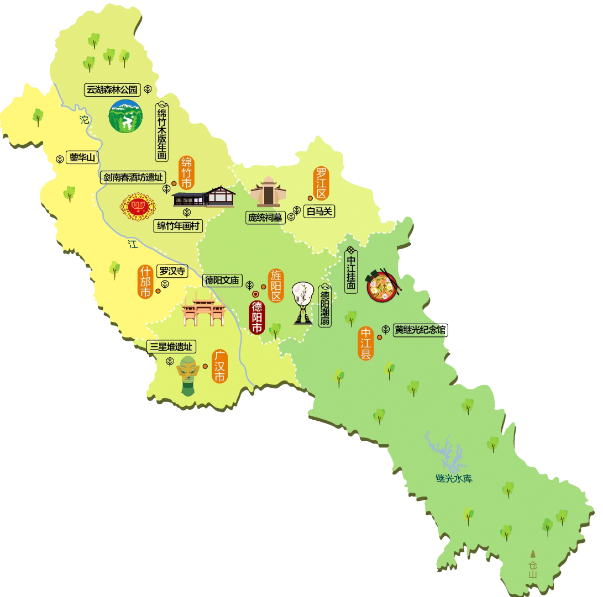

> 东湖山公园 <
东湖山公园位于德阳市建成区东沿，其中六分为山，四分为水，山水相抱，岸势蜿蜒。
园内有始建于西晋的古庙玉皇观，南有极具历史气息的钟鼓楼，以其“离尘不离城”的特色被誉为德阳市第一大郊野公园。
唐武德三年（620年），始析雒县、绵竹县部分地区置德阳县，为建制之始。
截至2024年3月，德阳市辖2个市辖区、1个县、代管3个县级市，另有2个城市功能区，共13个街道、67个镇、4个乡。
德阳市位于成都平原东北边缘，地理坐标位于北纬30°31′—31°42′、东经103°45′—105°15′之间。
德阳市东北与绵阳市涪城区交界，东面与绵阳市三台县交界；东南与遂宁市大英县、资阳市乐至县交界；南面与成都市金堂县、青白江区、新都区交界；西面与成都市彭州市交界；西北与阿坝藏族羌族自治州茂县交界；北面与绵阳市安州区交界。境域面积5911平方千米。
德阳市地处龙门山脉向四川盆地过渡地带，呈西北至东南的蚕形。地势西北高，东南低。
根据第七次人口普查数据，截至2020年11月1日零时，德阳市常住人口为3456161人。
截至2023年末，德阳市常住人口345.3万人，比上年末减少0.8万人，其中城镇人口202.9万人，乡村人口142.4万人。常住人口城镇化率58.8%，比上年末提高1.2个百分点。年末全市户籍人口377.5万人，比上年末减少1.0万人。
2022年，德阳市地区生产总值（GDP）2816.87亿元，按可比价计算，比上年增长3.1%。2023年，德阳市地区生产总值3014.4亿元，按可比价计算，比上年增长6.7%。
德阳城市主标识整体采用圆形构造，既有圆融之内涵，又取太阳之象形，呼应德阳之阳字。
图形的左半部分是一个齿轮形状，代表了德阳重型装备制造业之都的地位。图形的右边上半部分是古蜀字之象形，寓意德阳是古蜀文明的源头；下半部分的图案则是广汉三星堆，代表着德阳最为宝贵的文化遗产——广汉三星堆遗址。
红橙与蓝绿的亮丽色彩体现了德阳精彩绽放的活力和丰富多彩的文化生活。


东湖山公园位于德阳市建成区东沿，其中六分为山，四分为水，山水相抱，岸势蜿蜒。
园内有始建于西晋的古庙玉皇观，南有极具历史气息的钟鼓楼，以其“离尘不离城”的特色被誉为德阳市第一大郊野公园。
德阳地标建筑之一，跨越旌湖、连接长江路东、西段；是文化与生态、动与静、休闲与娱乐相结合的风景区。
有厚重的桥文化，有生态较好的自然环境，是最具特色的高品位文化与生态旅游区。
始建于南宋开禧二年，现为清道光年间重建遗存，占地面积20800平方米。德阳文庙是中国西部地区保存完整、规模宏大、具有浓郁地方特色的文庙。
2001年6月25日，德阳文庙被国务院公布为第五批全国重点文物保护单位。
东湖山公园位于德阳市建成区东沿，其中六分为山，四分为水，山水相抱，岸势蜿蜒。
园内有始建于西晋的古庙玉皇观，南有极具历史气息的钟鼓楼，以其“离尘不离城”的特色被誉为德阳市第一大郊野公园。
德阳地标建筑之一，跨越旌湖、连接长江路东、西段；是文化与生态、动与静、休闲与娱乐相结合的风景区。
有厚重的桥文化，有生态较好的自然环境，是最具特色的高品位文化与生态旅游区。
始建于南宋开禧二年，现为清道光年间重建遗存，占地面积20800平方米。德阳文庙是中国西部地区保存完整、规模宏大、具有浓郁地方特色的文庙。
2001年6月25日，德阳文庙被国务院公布为第五批全国重点文物保护单位。

蛋白晶莹剔透、松花清晰、蛋黄油绿、层次分明、入口鲜香、意韵悠长。
又称“银丝面”“空心面”。它的前身源于北宋淳化年间，作为北方人的中江县令崔谷因喜好面食，渐渐发展而来。到了清朝，更深得乾隆皇帝喜爱，成为宫廷贡品。至其细丝发，味甘色白，柔嫩可口，手工精制，堪称一绝。
具有200多年的历史，由8种主要原辅材料精制而成。外呈梅花状，表面油润光滑，食之油而不腻、外酥内细软、芳香绵糯，且富有多种维生素，为糕点中的一大特色。
牛肉色泽晶莹、清香扑鼻、酥脆化渣、余味绵长，与其他牛肉制品相比，风味独特、口感绝佳。后来，马道庸以长子昌恒的名字为商号。因“裹”与“果”音相同，且口感略带甜味，所以逐渐被写作“果汁牛肉”。

绵竹年画又称绵竹木版年画，中国民间木版年画之一，
因产于竹纸之乡的四川省绵竹市而得名，
流行于中国西南地区，与剑南春酒、赵坡茶并称为“绵竹三绝”。
绵竹年画多以木版印出轮廓而后填色。绵竹年画与天津杨柳青年画、
山东潍坊杨家埠木版年画、苏州桃花坞木版年画齐名为中国四大年画之一，
素有“四川三宝”、“绵竹三绝”之美誉，绵竹年画是世世代代民间画师们
勤劳和智慧的结晶，体现巴蜀人民乐观向上的思想感情和古老的民族风尚。
2002年2月，绵竹年画入选首批中国非物质文化遗产项目。
剑南春，产于四川绵竹,位于剑山之南，
且唐代时人们以“春”名酒，故名剑南春。
绵竹素有酒乡之称，是川酒发源地之一。
剑南春采用糯米、大米、小麦、高粱、玉米五种粮食为原料，
酿造时先以小麦制成中高温曲，在泥窖中固态低温发酵，
而后采用续糟配料、混蒸混烧、量质摘酒、原度贮存、勾兑调味等工艺
酿制完成，具有陈香幽雅、甘润飘逸、香浓清灵，饮之如珠玑在喉之感。
2008年6月7日，剑南春酒传统酿造技艺经中华人民共和国国务院批准列入
第二批国家级非物质文化遗产名录。
黄继光，四川省中江县人，中国共产党党员。
1953年4月8日，中国人民志愿军领导机关，
追授"中国人民志愿军特级英雄"称号。
1962年10月20日，黄继光家乡四川省中江县人民政府
改建的“黄继光纪念馆”开馆，朱德、董必武、刘伯承、
郭沫若为之题词。1982年10月20日，邓小平为
“黄继光纪念馆”的黄继光塑像基座题字：
“特级英雄黄继光”。
庞统祠墓位于罗江城西五公里，古代由秦入蜀都最后一道关隘，
是缀连在三国遗踪旅游线上的一颗璀璨明珠。“南临益州开千里沃野，
北望秦岭锁八百连云，东观潼川层峦起伏，西眺岷山银甲皑皑”。
庞统，刘备谋士。字士元，襄阳（今湖北省襄阳）人。号“凤雏”先生，与诸葛亮齐名。
建安十八年（公元214年）夏，庞统随刘备进攻雒县（今广汉市），
庞统身先士卒，率众攻城，被守城的兵将用箭射死，时年三十六岁。
刘备非常痛惜，将庞统厚葬于此。
2006年，庞统祠墓成为全国重点文物保护单位。
位于中国四川省广汉市城西鸭子河畔，南距成都40千米，
北距德阳26千米，占地面积1000亩，为现代化专题遗址博物馆，
是中国首批国家一级博物馆、首批国家AAAA级旅游景区。
三星堆博物馆基本陈列以“三星堆：沉睡数千年 一醒惊天下”为题，
分设“世纪逐梦”、“巍然王都”、“天地人神”三大展区，
共展出三星堆遗址出土的珍贵文物1500余件（套），
全面、系统地展示了三星堆考古发掘及最新研究成果。
三星堆博物馆的成立令人重新认识了巴蜀文化——是中国夏商时期前后，
甚至更早时期的一个重要的文化中心。